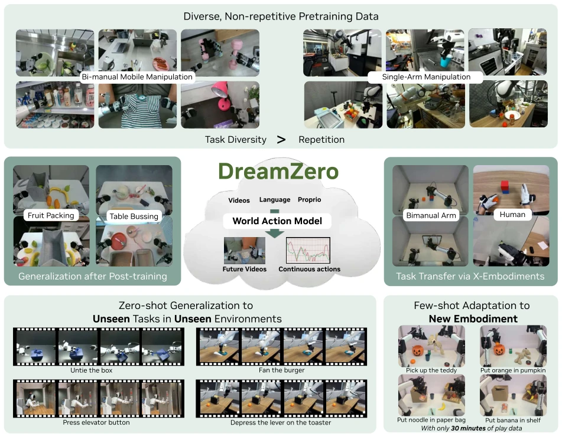
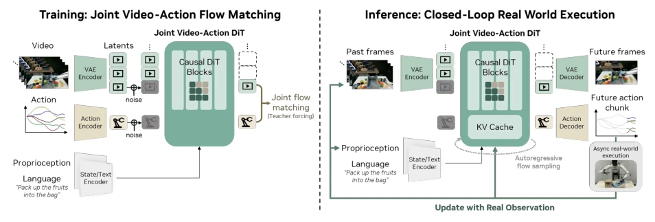
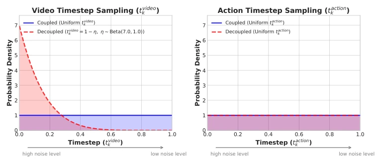
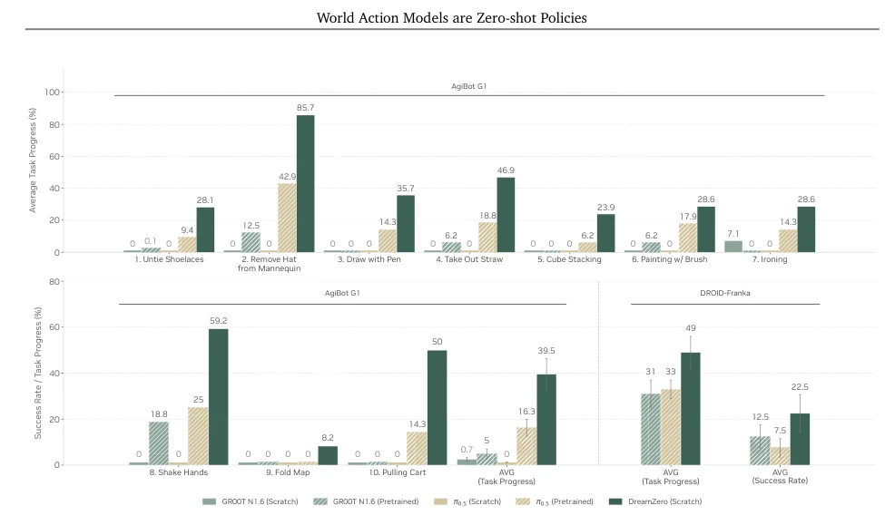
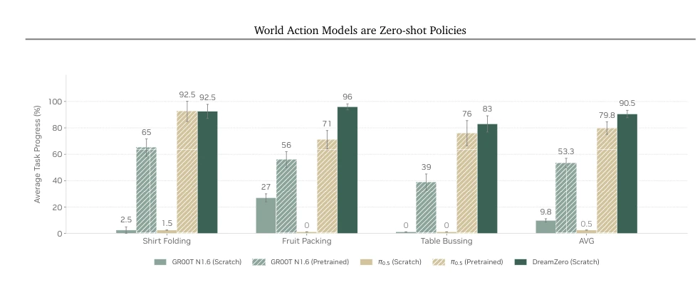
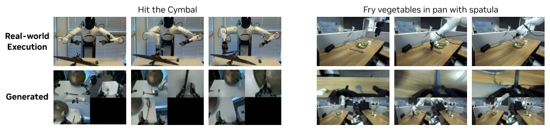
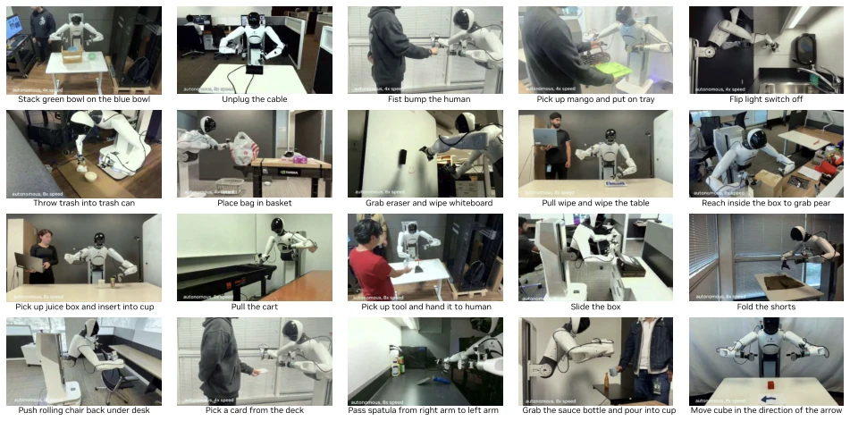
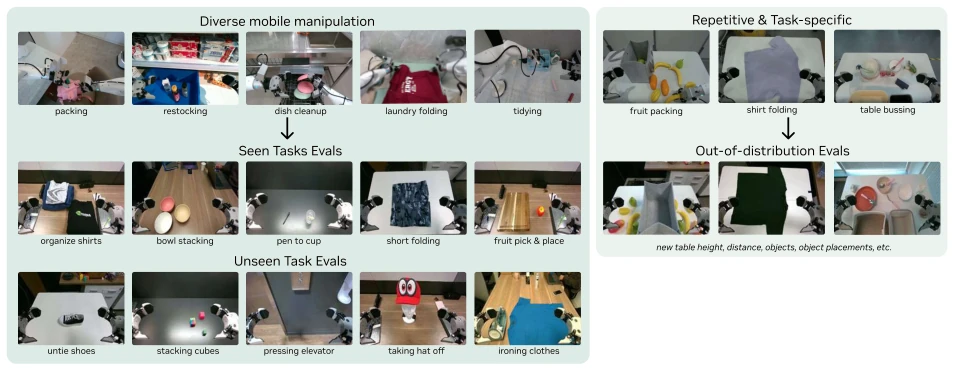
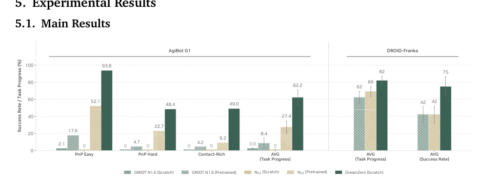
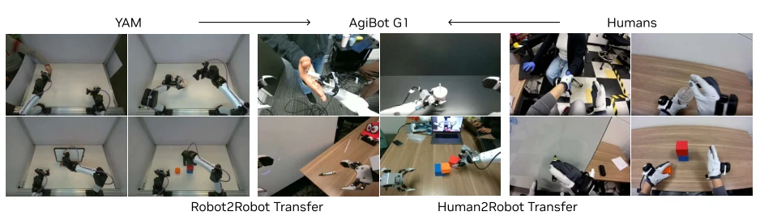

DreamZero attempts to address the physical dynamics shortcomings of VLA using video generation models, claiming to be a "World Action Model" capable of zero-shot generalization. However, the 14B model running at 7Hz relies entirely on stacked engineering optimizations; video generation quality directly determines the strategy upper limit, does this amount to shifting the blame to the video model? Although generalization improves by 2 times, the 500-hour data volume is still substantial, and it relies on specific robot hardware (AgiBot G1); while cross-entity transfer is interesting, video-only data quality is questionable. Furthermore, although the autoregressive architecture accelerates inference, it may introduce error accumulation, although they mitigated this with ground truth feedback. Although claiming zero-shot, it actually still relies on a small amount of post-training data. Overall, this is a balancing act between engineering and algorithms, rather than a pure theoretical breakthrough.
Existing VLA models (such as GR00T [9]) excel at semantic generalization but perform poorly on unseen physical actions and new environments, relying on repeated demonstrations. VLAs lack spatial perception and dynamics representation, leading to "knowing what to do but not how to do it". For example, VLAs struggle to execute unseen skills such as untying shoelaces unless the training data includes them. WAM implicitly learns physical laws by predicting future video states, aiming to break reliance on repeated data and achieve open-world generalization. Additionally, existing work mostly focuses on repeated demonstrations, while DreamZero emphasizes the effectiveness of heterogeneous data, attempting to solve the generalization bottleneck in the deployment of robot foundation models in the real world.

Figure 1: Overview. By jointly predicting video and action, World Action Models (WAMs) inherit world physics priors that enable 1) effective learning from diverse, non-repetitive data, 2) open-world generalization, 3) cross-embodiment learning from video-only data, and 4) few-shot adaptation to new robots.
DreamZero is based on a 14B video diffusion model (Wan2.1), adopting an autoregressive DiT architecture. Inputs include visual, language, and proprioception, jointly denoising video and actions through Flow Matching. Core innovations include: 1) Autoregressive generation utilizes KV Cache for acceleration, retaining native frame rate; 2) DreamZero-Flash decouples video and action noise scheduling, training the model to predict clean actions from noisy videos, reducing diffusion steps; 3) Asynchronous closed-loop execution replaces predicted frames in KV Cache with real observations to prevent error accumulation; 4) Quantization and CUDA optimization achieve 38x speedup. Additionally, the model adopts chunk-wise training, supporting variable-length videos, ensuring modality alignment between video and actions. The training objective adopts Flow Matching, sharing denoising timesteps to accelerate convergence.

Figure 4: Model Architecture of DreamZero. The model takes three inputs: visual context (encoded via a VAE), language instructions (via a text encoder), and proprioceptive state (via a state encoder). These are processed by an autoregressive DiT backbone using flow matching, which jointly predicts future video frames and actions through separate decoders. During training (left), for each chunk, the model denoises noisy video and action latents conditioned on clean video context. During inference (right), predictions are executed asynchronously in the real world, and ground-truth observations are fed back into the KV cache to prevent error accumulation.

Figure 5: Decoupled Noise Schedules. DreamZero (blue) uses coupled noise for video and action (both uniform). DreamZero-Flash (red) biases video toward high-noise states via a Beta distribution while keeping action noise uniform, training the model to predict clean actions from noisy visual context.
Tested on AgiBot G1 and Franka (DROID). Compared with GR00T N1.6 and pi0.5. Uses 500 hours of heterogeneous data. Metrics are task progress and success rate. Results show DreamZero's average task progress improved by over 2 times on unseen tasks, reaching 7Hz real-time control. Cross-entity transfer requires only 10-20 minutes of video data. Ablation shows data diversity is more important than repeated demonstrations. In post-training tasks, DreamZero maintained environmental generalization capabilities, outperforming VLA. Tasks include folding shirts, packing fruits, etc., DreamZero performs significantly better than the baseline on unseen tasks.

Figure 9: Zero-shot Generalization to Unseen Tasks. DreamZero achieves non-trivial task progress on 10 tasks absent from training, while VLAs struggle across both embodiments.

Figure 10: Posttraining Results. WAMs enable stronger post-training results across three tasks, indicating that environment generalization of DreamZero is retained after post-training.
其他图片Other Figures

Figure 2: Joint Video and Action Prediction. DreamZero jointly generates video and action. We observe that the predicted actions closely align with the generated video. The examples are from totally unseen tasks.

Figure 3: Free-form Evaluation. DreamZero performs a diverse range of tasks when conditioned on natural language instructions, including object manipulation, tool use, and human-robot interaction.

Figure 7: AgiBot Evaluation Set-up. We are first-citizens of generalization evals, where the default setting is unseen environment and unseen objects.

Figure 8: Seen Task Evaluation. DreamZero effectively learns from diverse data and generalizes to new environments, outperforming VLAs across all task categories. VLAs trained from scratch achieve near-zero suc- cess, while pretrained VLAs show modest performance—likely benefiting from embodiment-specific knowledge acquired through repetitive demonstrations during pretraining.

Figure 11: Cross-Embodiment Transfer. We explore robot-to-robot (YAM →AgiBot) and human-to-robot embodiment transfer to unseen tasks.